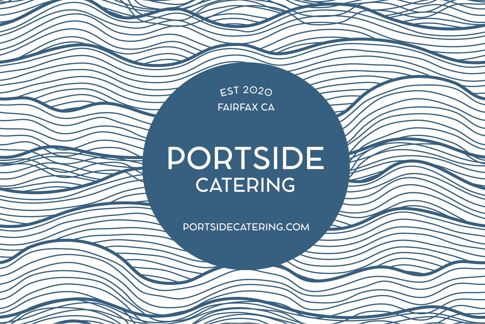
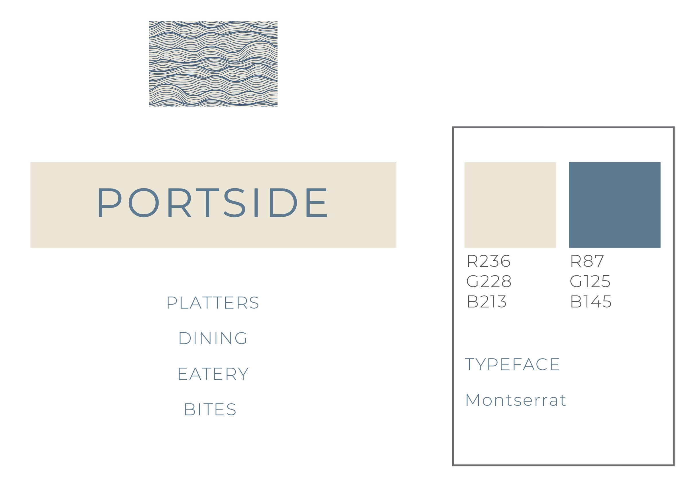
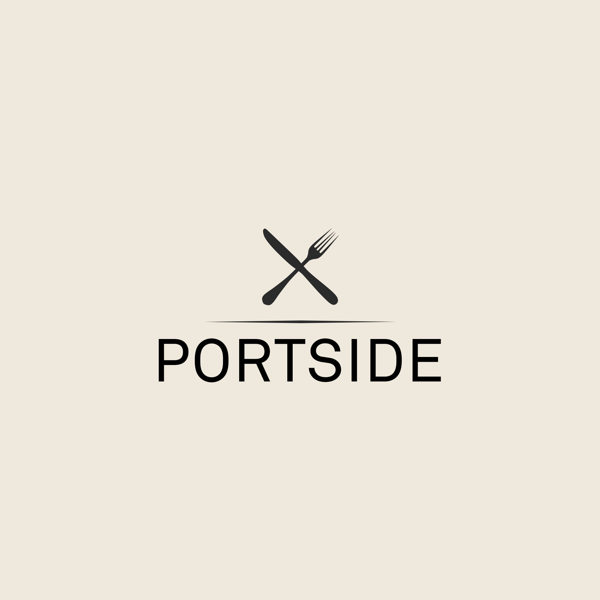
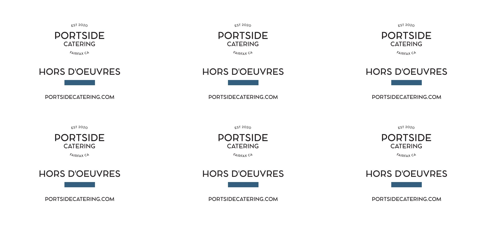

agency:collective · Brand · 2019
Portside Catering
Brand identity for Portside, a catering business offering platters and grazing tables: logo, colour and type system, and printed menu labels.
Role
Creative Director, agency:collective
Client
Portside Catering
Year
2019
Scope
Logo, brand guide, menu labels

The problem
Portside needed an identity it could apply across packaging and event materials, including editable labels for individual dishes.
The approach
The identity pairs a circular Portside Catering lockup with a hand-drawn wave pattern, set in Montserrat with a two-colour palette of cream and slate blue defined in the brand guide.
The system extends to sheets of editable menu labels, each carrying the logo, the dish name and the web address, so the client could produce labels for each item on the menu.



Leadership
Directed the identity and its applications through agency:collective.